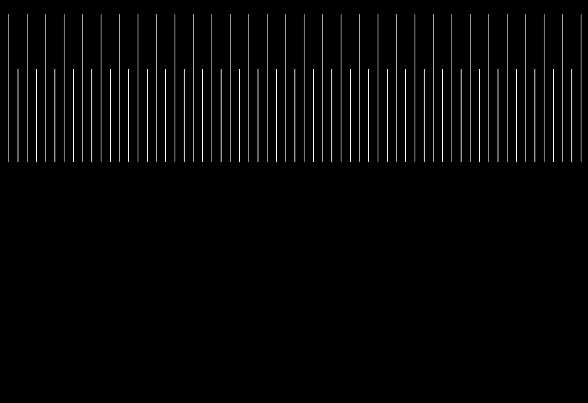
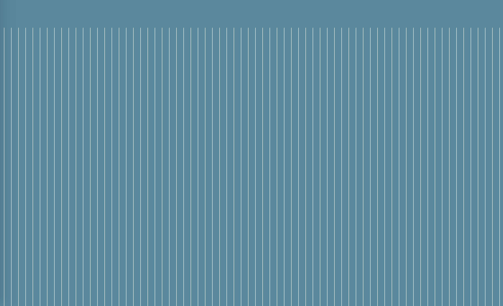

For this final project I wanted to create an animation that showed the pursuit of happiness. The character chases the word “happiness” for some time and then once they finally stop and take a breath the phrase “Happiness is not a destination” appears and the character disappears. This shows that true happiness is being content with where you are, not something you can chase. I chose the “Bojack Horseman” theme song to go with this animation because that show is about Bojack’s struggle to be a happier and better person. He constantly chases milestones in his life to see if he’ll finally be happy and once he reaches those milestones he remains unhappy. I can relate a lot to this show as I also struggle to find happy moments in my life and I feel like I constantly have to search for the next thing that will make me happy. As for the character, I decided to go with a rounded triangle. I googled what the saddest shape was and I found this study done in 2016 called “The Shapes of Emotions” and the shape for sadness was described as blue, rounded, bubbly, and heavy.
 